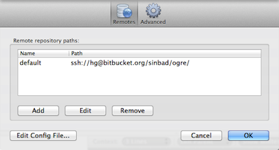
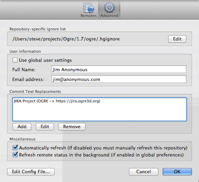

Repository Settings
You can access the settings which are specific to a single repository by clicking on the 'Settings' button on the right-hand side of the toolbar, or by using the Repository menu.
If for any reason you need to edit the config file for this repository manually, you can do so by using the 'Edit Config File' button at the bottom left of the window.
Remotes

This section allows you to configure the remotes that you use to push or pull changes. If you cloned from another repository, there will already be one entry in here, but you can add more if you wish.
When you add or edit a repository, you can either supply the URL manually, or if your repository is hosted ith Bitbucket, Github or Kiln you can use the 'World' button to access those remotes much more easily. See the Hosted Projects section for details.
Security
See the GPG help section for a description of the security tab.
Advanced

The advanced section includes a number of additional options:
Repository-specific ignore list
You can use the 'Edit' button here to alter the ignore list for this repository. The path of this file depends on the system but SourceTree will detect it for you.
User Information
By default SourceTree will use the user details you specified in the main Preferences, but if you like you can specify different details for commits to this repository.
Commit Text Replacements
Here you can specify ways that the commit messages will be searched for matching patterns, and replacements or markup provided. For example, you might want to change instances of 'SRCTREE-[number]' with a link to a JIRA issue. This is done through regular expression matching and replacement.
If you click 'Add' here, SourceTree will provide you with shortcuts to create linking rules for JIRA and Crucible projects, when you simply need to supply the project name (e.g. SRCTREE) and the URL for the JIRA instance (e.g. https://jira.atlassian.com). From this point on, all mentions of issues for this project will be linked to the correct address on your JIRA / Crucible project. In the examples above, mentions like SRCTREE-1000 would link to https://jira.atlassian.com/browse/SRCTREE-1000, and so on.
Other than JIRA and Crucible link, you can set up any other kind of text replacement in this section, just by providing a regular expression to match, and a replacement string (which will probably want to refer to captures in the regex like $1, $2 etc). The commit message box is standard HTML, so you can use any replacement you would in a web page.
Miscellaneous
Automatically Refresh controls whether or not this repository refreshes automatically when files change, which can turn off the application-level preference for this repository.
Refresh remote status in the background controls whether this repository accesses remotes in the background to check on incoming or outgoing changes, which can turn off the application-level preference for this repository.
See also
The Toolbar
The Sidebar and Footer
The File Status View
The Log View
The Search View
Drafting a commit message
Submodules and Subrepositories